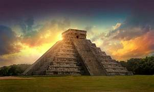

Nombre: Chichén Itzá
País: México
Año de construcción: Aproximadamente entre los años 600 y 1200 d. C.
Chichén Itzá fue una de las ciudades más importantes de la civilización Maya. Se convirtió en un gran centro político, religioso y comercial de la región de Yucatán. Los mayas desarrollaron en este lugar grandes conocimientos de astronomía, matemáticas y arquitectura, dejando construcciones que aún se conservan hasta la actualidad.
Durante los equinoccios de primavera y otoño, la luz del sol crea una sombra sobre la pirámide de Kukulkán que parece formar la figura de una serpiente descendiendo por las escaleras, un fenómeno relacionado con el dios maya Kukulkán.
Siguiente Maravilla →